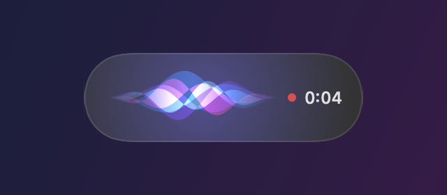

What is WisperKit?
A menu bar app that turns your voice into text, typed wherever your cursor is.
Press ⌃ ⌥ D, talk, press it again. OpenAI Whisper transcribes your voice locally (on the Neural Engine through WhisperKit by Argmax on a Mac, through whisper.cpp on Windows) and the text lands in the app you were using: a chat, an email, your editor, a terminal.
No account, no subscription, and no audio ever leaves your computer.

Install on macOS
Requires macOS 15 Sequoia or later on Apple Silicon (M1 or newer), and about 2 GB of free disk space for the default model.
Homebrew
brew tap eldriic/tap
brew trust eldriic/tap
brew install --cask wisperkitHomebrew asks you to trust a third-party tap once. Update later with brew upgrade --cask wisperkit.
Manual download
- Download
WisperKit-x.y.z.dmgfrom the latest release. - Open it and drag WisperKit into Applications.
- The app is not notarized, so macOS blocks the first launch: open System Settings, Privacy and Security, and click Open Anyway next to WisperKit.
Or remove the quarantine flag from a terminal:
xattr -dr com.apple.quarantine /Applications/WisperKit.appFirst launch
A welcome window walks you through setup:
- Microphone: allow it when macOS asks.
- Accessibility: needed to type into other apps. Without it, WisperKit still works but only copies the text to your clipboard.
- Model:
large-v3-turbo(about 1.6 GB) downloads once from Hugging Face; progress shows in the menu. - Put your cursor anywhere, press ⌃ ⌥ D, speak, press it again.

Install on Windows
Requires Windows 10 (1809) or 11, x64 or ARM64, and about 1 GB of free disk space.
- Download
WisperKit-Setup-x.y.z-x64.exe(or-arm64.exe) from the latest release and run it. No administrator rights needed. - The installer isn’t signed yet, so SmartScreen may warn you once: click More info, then Run anyway.
- The welcome window downloads
large-v3-turbo(about 550 MB), then press Ctrl Alt D anywhere.
WisperKit lives in the notification area. No Accessibility permission is needed on Windows, but text can’t be inserted into apps running as administrator. Diagnostic log: %LOCALAPPDATA%\WisperKit\Logs\wisperkit.log.
Shortcut and modes
| Action | Default |
|---|---|
| Start or stop dictation | ⌃ ⌥ D on Mac, Ctrl Alt D on Windows |
| Cancel while listening | Esc |
| Push-to-talk | Settings, Keyboard, Mode: Hold |
| Copy the last dictation | Menu bar, Last dictation |
In Toggle mode you press once to start and once to stop. In Hold mode you speak while the shortcut is held down. Change the shortcut itself in Settings, Keyboard.
Settings
Interface language (English or French), auto-insert, clipboard-free typing, clipboard restore, dictation language (auto-detect by default, or forced English or French), translation to English, sounds, the on-screen indicator and launch at login.
Never use the clipboard types the text key by key instead of pasting it. It is a bit slower, and your clipboard is never touched. Pasted text is flagged so clipboard managers skip it.

Models
| Model | Size | Best for |
|---|---|---|
large-v3-turbo (default) | 1.6 GB | Best accuracy and speed trade-off |
large-v3 | 3 GB | Maximum accuracy, slower |
small | 480 MB | Older or low-memory Macs |
base | 140 MB | Quick tests |
Sizes are for macOS. Models are stored in ~/Library/Application Support/WisperKit/Models. On Windows they run on the CPU or on the GPU through Vulkan (NVIDIA, AMD, Intel).
Translate to English
Turn on Translate to English and WisperKit writes your words in English, whatever language you speak. Leave it off and the text stays in the language you spoke, detected automatically.
large-v3 gives the best translations. The default large-v3-turbo wasn’t trained on Whisper’s translation task, so WisperKit makes it write directly in English instead: it works well for everyday sentences but can be less faithful on long or technical dictations.
Privacy
- Audio is recorded in memory, transcribed on your computer and discarded. Nothing is uploaded, logged or kept.
- The only network access is the one-time model download from Hugging Face.
- No analytics, no telemetry, no account.
Troubleshooting
The text is copied but not pasted into the app
WisperKit needs the Accessibility permission to type into other apps, and macOS sometimes keeps a stale entry after an update. Reset it, relaunch WisperKit and enable it again from Settings, Permissions:
tccutil reset Accessibility com.eldriic.wisperkit
tccutil reset PostEvent com.eldriic.wisperkitA diagnostic log is written to ~/Library/Logs/WisperKit/wisperkit.log.
Nothing happens when I press the shortcut
Check the menu bar icon: the model may still be downloading or loading. Another app may also use the same shortcut; pick another one in Settings, Keyboard.
Some words are wrong
Force the language in Settings, General, Dictation language instead of auto-detect, and prefer large-v3-turbo or large-v3. A good microphone close to your mouth helps a lot.
Why is the app not notarized?
Notarization requires a paid Apple Developer account. Releases are signed with a stable self-signed certificate instead: Gatekeeper asks for confirmation once, and macOS keeps your permissions across updates. The Homebrew cask removes the quarantine flag for you.
Build from source
macOS requires Xcode 16 or later and XcodeGen.
git clone https://github.com/eldriic/WisperKit.git && cd WisperKit
swift test
./Scripts/build.sh --installWindows requires the .NET 10 SDK.
cd windows
dotnet test tests/WisperKit.Core.Tests
dotnet publish src/WisperKit.App -c Release -r win-x64 --self-contained -o publish/x64Issues and pull requests are welcome on GitHub.